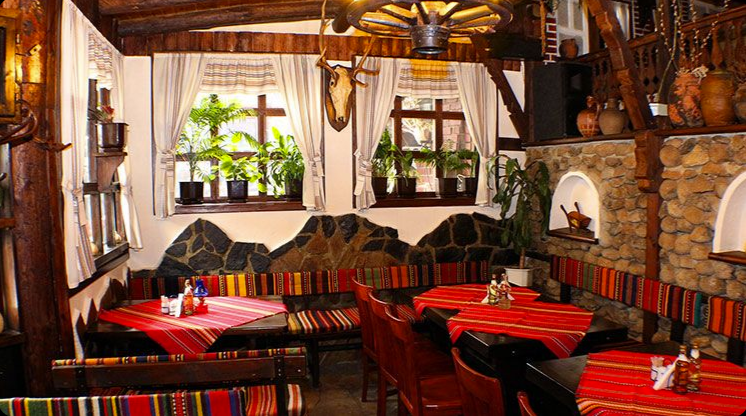
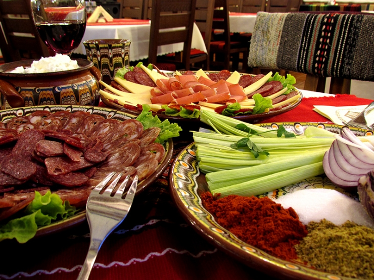
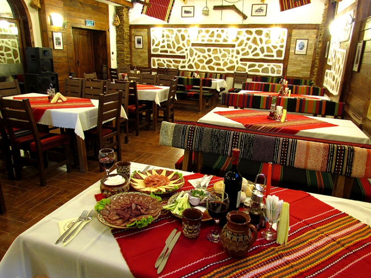

За нас
Добре дошли в Българска Механа — място, където времето спира и всяка хапка разказва история. Основана с любов към традицията, нашата механа пази духа на истинската българска трапеза — приготвена с местни продукти, сервирана в топла и уютна обстановка.



„Храната е любов, изразена с вкус. В нашата механа всяко ястие носи спомена на баница от фурна, на миризмата на дървени въглища и на смеха около родната маса."
- Основана 1998 — над 25 години традиция и гостоприемство.
- Домашна кухня — рецепти предавани от поколение на поколение.
- Местни продукти — работим с български фермери и доставчици.
- Жива музика — народна музика на живо всеки петък и събота.
Защо да ни посетите?
- Автентични български ястия по традиционни рецепти
- Уютна атмосфера
- Подходящо място за семейни вечери
- Любезен екип